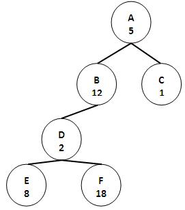

| Soal: | ||||||||
|
(pbhtgjl3) Pohon Biner Hitung Simpul GenapPembuat Soal: Rosa A. S.
Buatlah dengan pohon biner. Diberikan sebuah pohon biner tentang angka genap yang dimiliki anak-anak dari sebuah simpul sampai di bawah. Misalkan contoh berikut:  Maka jika diminta menghitung jumlah simpul yang memiliki nilai genap pohon B maka akan tampil 4 karena ada 4 simpul yang bernilai genap, jika diminta menghitung pada pohon C maka akan tampil 0 karena tidak ada simpul bernilai genap di pohon C. Format Masukan:n, 0 < n < 20, banyaknya simpuln baris simpul yang terdiri dari orang tua, nama simpul, dan nilainya (setiap anak akan dimasukkan sebagai anak terakhir dari pohon, jadi jika anak kiri sudah ada maka jika ada anak baru akan dimasukkan sebagai anak kanan) simpul pohon sebagai awalan untuk menghitung. Format Keluaran:jumlah simpul yang memiliki nilai genap pada pohon yang dimintaContoh Masukan
Contoh Keluaran
|
|||||||